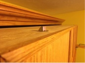

Picture Frame Molding: Finding oak molding for the face of the cabinet at the right size, design and without needing an equity loan.
Oak planks cut into strips on table saw. Created custom frame molding with table router fitted with ogee bit.
Board Width: Needed solid oak in wide width (not ply, as routered edges show layering).
Glued boards for needed width using portable joiner and #20 biscuits.
Board Thickness: When folded together, 3/4" standard thickness of table top & leg protrude too far out.
Fed stock thru table top planer to mill leg thickness down to 0.5" to reduce stacked profile.
Accident Prevention: How to secure bed from accidentally coming out of cabinet carcass.
Drilled hole with forstner bit for spring loaded latch that activates when "leg" not in use and retracts when "leg" is pulled open.

Poor Finish: Oak has larger pores and dominant grains that absorb stains unevenly.
Combo of hand/orbital sanding and applying coat of wood conditioner first. Followed by light sanding, to knock down raised fibers, and then stain/polyurethane finish.
Protruding Boards: Table top & leg will not lie flat against cabinet due to thickness of hinges between them.
Needed to use piano hinge due to its low profile & stabilizing length. Routered a recess along each edge using straight bit.
Locking Mechanism: Needed to secure table from unintentionally releasing. Latches, slide bolts and other off-the-shelf products are unsightly.
Integrated existing hardware as the solution. To avoid gouges, inserted metal sleeve through penetrations of table & leg. Recessed brass screw insert into carcass. Knob now secures table to cabinet and retains consistent image.
 (mc)fancy
(mc)fancy

{kind=link}
{kind=link}
{kind=link}
{kind=link}